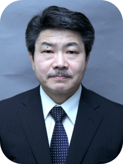
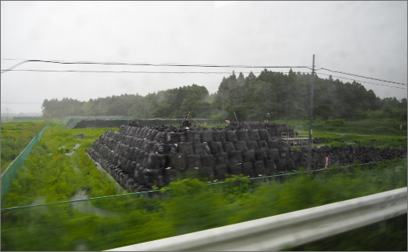

教員・学生研究紹介

Hiroshi Takahashi
高橋 弘司
ジャーナリズム論、
メディア論、
中東・イスラム圏地域研究
Q1.現在の研究テーマ（または専門分野）について教えてください。
１.大学生や若者へのリテラシー教育（マスコミ不信の若者にどうジャーナリズムの大切さを伝えるのか。たとえば、福島第１原発事故の被災地に学生を引率し、自ら住民に聞き取り調査するなど「ジャーナリズム実践教育」を通じて）
２.日本で暮らす難民の現状と課題（ベトナム戦争後、日本に逃れてきたインドシナ難民は今、どんな暮らしをしているのか？日本の難民政策の問題点は？）
３.広島、長崎の被爆者証言をどのように後世に語り継いで行くべきか？
Q2.教員になるまで、どんな学術・実務上の経験がありますか？
毎日新聞社で３２年間、新聞記者をしていました。カイロで４年間、ニューヨークで３年間特派員を経験するなど国際ニュース報道に１１年間携わりました。
また、大阪社会部で主に事件・事故の取材を担当したほか、特別報道部で調査報道にも携わり、帯状疱疹治療新薬「ソリブジン」発売直後、副作用で多数の死者が出た背景などを追及したキャンペーン報道では取材班キャップを務め、ジャーナリストの横断組織「日本ジャーナリスト会議（ＪＣＪ）」が年間最優秀報道に与える1994年度グランプリなどを受賞しました。
Q3.研究指導で大切にしていることについて教えてください。
院生個々の個性や研究動機を可能な限り、大切にし、若者らしい発想を つぶさないように心がけている。

原発事故で故郷を追われた福島県・富岡町民のみなさんに、都市科学部の学生らが聞き取りした様子（福島県郡山市の町民交流施設「おがだいさまセンター」で。２０１９年６月２９日） ＊注記＝「おだがいさまセンター」の名称は「おたがいさま」ではなく、福島の方言を反映した「おだがいさま」が正式です。
.png)
写真２＝原発事故で途絶えていた運動会が福島県・浪江町で８年ぶりに開催された。横浜国大の学生もボランティアなどとして参加した。（福島県・浪江町の「なみえ創成小・中学校」で。２０１８年１０月１３日）
Q4受験生へメッセージ（大学院生へ）
大学という「タコつぼ」の中での研究にならないよう、社会に役立つ研究を常に意識してください。

写真３＝全住民避難を強いられた福島県・浪江町は立ち入り制限が解除されたが、今も、街は閑散としたままだ。（福島県・浪江町で。２０１９年６月３０日）

写真４＝福島県内のあちこちには、放射性廃棄物を詰めた黒いフレコンバックがうず高く積まれたままだ。 （福島県・大熊町近くで。２０１９年６月３０日）